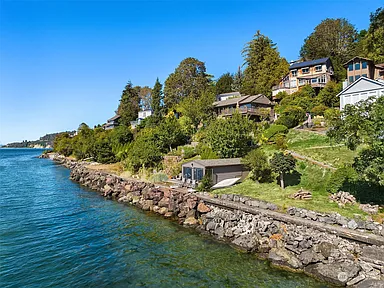

This house is the first house I saved on zillow. It has gigantic windows and the best built-in bookshelves I have ever seen. It's right on the water and is next to a private dock. The roof is green copper and features a three story octogonal tower.
This house is directly on the water with gorgeous landscaping. The view from the kitchen is like you're standing on a beach and opens into a large balcony. The windows in the living room are large and encompass the room, providing the area with endless natural sunlight.
